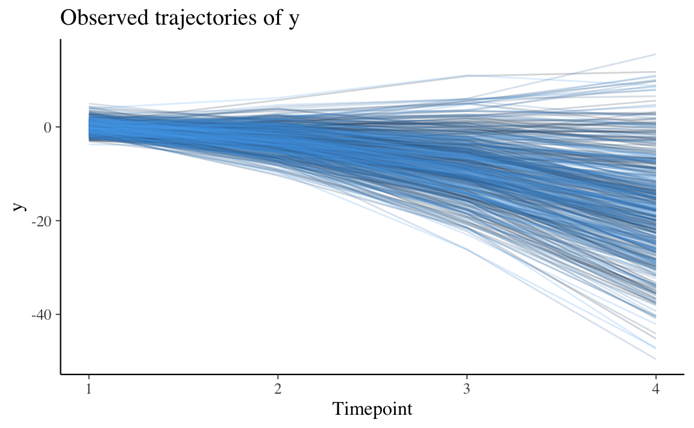

31.2 Crescita non lineare
Ripetiamo la procedura di analisi descritta sopra introducendo però un cambiamento: verrà considerato un modello nel quale la crescita non è lineare.
Nelle analisi seguenti useremo i seguenti indici di bontà di adattamento.
selected_fit_stats <-
c(
"chisq.scaled",
"df.scaled", ## must be >0 to test G.O.F.
"pvalue.scaled", ## ideally n.s.
"cfi.scaled", ## ideally ≥ 0.95
"rmsea.scaled", ## ideally ≤ 0.05
"rmsea.pvalue.scaled", ## ideally n.s.
"srmr" ## ideally < 0.08
)Simulo i dati secondo questo modello.
growth_mod <-
"
## intercept & slope growth terms for X
iX =~ 1*x1 + 1*x2 + 1*x3 + 1*x4
sX =~ 0*x1 + 1*x2 + 2*x3 + 3*x4
## intercept, slope, & quadratic terms for Y
iY =~ 1*y1 + 1*y2 + 1*y3 + 1*y4
sY =~ 0*y1 + 1*y2 + 2*y3 + 3*y4
qY =~ 0*y1 + 1*y2 + 4*y3 + 9*y4
## set variances
y4 ~~ 2*y4
x4 ~~ 1*x4
## set latent means/intercepts
iX ~ 2*1
sX ~ 1*1
sY ~ -1*1
qY ~ -1.5*1
sY ~ 2*predictor
outcome ~ 2*iX + 3*sY
"A questo fine uso la funzione simulateData() di lavaan. La simulazione include due variabili misurate in quattro punti temporali.
sim_growth_dat <- lavaan::simulateData(
model = growth_mod,
model.type = "growth",
seed = 82020,
orthogonal = FALSE,
auto.cov.y = TRUE,
auto.var = TRUE
)Le variabili sono chiamate x1, x2, x3, x4, per la misurazione di x ai tempi 1, 2, 3, 4. Lo stesso per la y.
head(sim_growth_dat)
#> x1 x2 x3 x4 y1 y2 y3
#> 1 1.033229 2.746064 4.9423623 8.41058044 3.36324415 -1.196550 -11.103494
#> 2 3.192802 3.057675 0.7965786 0.84592869 -1.60039704 -5.970381 -10.399366
#> 3 3.758457 4.712351 5.6308218 4.76577291 2.58001675 -3.272134 -11.312994
#> 4 2.700514 4.921257 6.7116263 10.13354061 0.03886676 0.510869 -5.937016
#> 5 1.259807 1.526301 1.6663799 -0.09959486 0.53939838 -4.274106 -12.968362
#> 6 2.547125 5.426192 4.9463195 8.48790397 2.18069542 1.590009 -2.253218
#> y4 outcome predictor
#> 1 -31.509255 2.161186 -0.4893276
#> 2 -19.908088 5.089750 0.5199749
#> 3 -26.681111 3.173129 -0.5938816
#> 4 -7.836099 1.035215 -0.7813707
#> 5 -22.595311 -4.352557 -0.7067630
#> 6 -8.892786 3.277985 -1.2978592Aggiungo qui il numero del partecipante.
Nei dati simulati, la variabile x cambia linearmente nel tempo e la variabile y cambia seguendo un andamento quadratico. Esaminiamo i dati graficamente.
x_plot <-
pivot_longer(sim_growth_dat,
cols = x1:x4,
names_to = "x",
names_prefix = "x"
)
individual_x_trajectories <-
ggplot(
x_plot,
aes(
x = as.numeric(x),
y = value,
group = participant_n,
color = participant_n
)
) +
geom_line(alpha = 0.2) +
labs(
title = "Observed Trajectories of x",
x = "Timepoint",
y = "x"
) +
xlim(1, 4) +
theme(legend.position = "none")
individual_x_trajectories
Su può vedere che la variabile x segue una crescita lineare, ma un modello quadratico molto “debole” potrebbe adattarsi meglio ai dati, quindi sarà necessario controllare se in effetti questo è vero.
Esaminiamo ora la variabile y.
y_plot <-
pivot_longer(sim_growth_dat,
cols = y1:y4,
names_to = "y",
names_prefix = "y"
)
individual_y_trajectories <-
ggplot(
y_plot,
aes(
x = as.numeric(y),
y = value,
group = participant_n,
color = participant_n
)
) +
geom_line(alpha = 0.2) +
labs(
title = "Observed trajectories of y",
x = "Timepoint",
y = "y"
) +
xlim(1, 4) +
theme(legend.position = "none")
individual_y_trajectories
È chiaro che la y diminuisce in media con il tempo, ma c’è eterogeneità (o variabilità) in ciò che accade nei singoli caso. Anche in questo caso, sia un modello lineare sia un modello quadratico sembrano appropriati per descrivere il cambiamento nei dati, anche se un modello quadratico sembra più appropriato.
31.2.1 Stimatore
Tutti i dati utilizzati sono continui, quindi si potrebbe usare la stima della massima verosimiglianza (stimatore = ML). Tuttavia, quando possibile, è preferibile usare la variante “robusta” di questo stimatore allo scopo di rendere conto della possibile non normalità dei dati (stimatore = MLR).
31.2.2 Assenza di crescita
Iniziamo con un modello per la x che assume che non vi sia variazione in funzione del tempo.
Adattiamo il modello ai dati ed esaminiamo i risultati.
int_x_fit <-
growth(
model = int_x_mod,
estimator = "MLR",
data = sim_growth_dat
)
int_x_fit_stats <-
fitmeasures(
int_x_fit,
selected_fit_stats
) %>%
data.frame()
round(int_x_fit_stats, 2)
#> .
#> chisq.scaled 1192.66
#> df.scaled 8.00
#> pvalue.scaled 0.00
#> cfi.scaled 0.02
#> rmsea.scaled 0.54
#> rmsea.pvalue.scaled 0.00
#> srmr 0.63È chiaro che il modello di assenza di crescita non spiega i dati x. Consideriamo la variabile y. Anche in questo caso prendiamo in considerazione un modello di assenza di variazione nel tempo.
int_y_mod <-
"
iY =~ 1*y1 + 1*y2 + 1*y3 + 1*y4
"
int_y_fit <-
growth(
model = int_y_mod,
estimator = "MLR",
data = sim_growth_dat
)
int_y_fit_stats <-
fitmeasures(
int_y_fit,
selected_fit_stats
) %>%
data.frame()
round(int_y_fit_stats, 2)
#> .
#> chisq.scaled 3136.54
#> df.scaled 8.00
#> pvalue.scaled 0.00
#> cfi.scaled 0.00
#> rmsea.scaled 0.88
#> rmsea.pvalue.scaled 0.00
#> srmr 0.98Il modello di assenza di crescita non è adeguato neppure per la variabile y.
31.2.3 Crescita lineare
Esaminiamo un modello di crescita lineare per la x.
linear_x_mod <-
"
iX =~ 1*x1 + 1*x2 + 1*x3 + 1*x4
sX =~ 0*x1 + 1*x2 + 2*x3 + 3*x4
"
linear_x_fit <-
growth(
model = linear_x_mod,
estimator = "MLR",
data = sim_growth_dat
)
linear_x_fit_stats <-
fitmeasures(
linear_x_fit,
selected_fit_stats
) %>%
data.frame()
round(linear_x_fit_stats, 2)
#> .
#> chisq.scaled 4.03
#> df.scaled 5.00
#> pvalue.scaled 0.54
#> cfi.scaled 1.00
#> rmsea.scaled 0.00
#> rmsea.pvalue.scaled 0.92
#> srmr 0.02Il modello di crescita lineare per la x fornisce un buon adattamento ai dati rispetto a tutti gli indici. Questo è ciò che ci aspettavamo esaminando il grafico dei dati.
Esaminiamo un modello di crescita lineare per la y.
linear_y_mod <-
"
iY =~ 1*y1 + 1*y2 + 1*y3 + 1*y4
sY =~ 0*y1 + 1*y2 + 2*y3 + 3*y4
"
linear_y_fit <-
growth(
model = linear_y_mod,
estimator = "MLR",
data = sim_growth_dat
)
linear_y_fit_stats <-
fitmeasures(
linear_y_fit,
selected_fit_stats
) %>%
data.frame()
round(linear_y_fit_stats, 2)
#> .
#> chisq.scaled 842.85
#> df.scaled 5.00
#> pvalue.scaled 0.00
#> cfi.scaled 0.61
#> rmsea.scaled 0.58
#> rmsea.pvalue.scaled 0.00
#> srmr 0.55Il modello lineare è inadeguato per la y rispetto a tutti gli indici considerati.
31.2.4 Crescita quadratica
I termini quadratici descrivono il tasso medio di variazione della pendenza tra le diverse rilevazioni temporali. Nei modelli SEM, una tale caratteristica viene detta “crescita quadratica”.
Consideriamo un modello di crescita quadratica per la x.
quad_x_mod <-
"
iX =~ 1*x1 + 1*x2 + 1*x3 + 1*x4
sX =~ 0*x1 + 1*x2 + 2*x3 + 3*x4
qX =~ 0*x1 + 1*x2 + 4*x3 + 9*x4
"
quad_x_fit <-
growth(
model = quad_x_mod,
estimator = "MLR",
data = sim_growth_dat
)
quad_x_fit_stats <-
fitmeasures(
quad_x_fit,
selected_fit_stats
)
round(quad_x_fit_stats, 2)
#> chisq.scaled df.scaled pvalue.scaled cfi.scaled
#> 0.02 1.00 0.89 1.00
#> rmsea.scaled rmsea.pvalue.scaled srmr
#> 0.00 0.94 0.00Qui abbiamo un problema interessante, poiché la x si adatta bene sia a un modello lineare sia a uno quadratico. Abbiamo però un caso di Heywood: la varianza stimata della variabile x4 è negativa.
lavInspect(quad_x_fit, "est")$theta
#> x1 x2 x3 x4
#> x1 1.171
#> x2 0.000 0.718
#> x3 0.000 0.000 1.213
#> x4 0.000 0.000 0.000 -0.064Questo è ovviamente un problema, in quanto il modello non sembra adeguato per i dati. È possibile introdurre dei vincoli sui parametri per poi valutare se, evitando il caso di Heywood, l’adattamento si mantiene a livelli adeguati. Tuttavia, per i fini di questo tutorial, ignoreremo il caso di Heywood e proseguiremo nell’analisi.
Quando si hanno due modelli nidificati adatti (nel nostro caso, modelli lineari e quadratici), possiamo confrontare formalmente l’adattamento relativo dei due modelli con il test del rapporto di verosimiglianza (LRT). L’ipotesi nulla è che non vi sia alcuna differenza nella covarianza spiegata dai due modelli. Se la covarianza spiegata è equivalente, preferiamo il modello più semplice.
lavTestLRT(linear_x_fit, quad_x_fit)
#>
#> Scaled Chi-Squared Difference Test (method = "satorra.bentler.2001")
#>
#> lavaan NOTE:
#> The "Chisq" column contains standard test statistics, not the
#> robust test that should be reported per model. A robust difference
#> test is a function of two standard (not robust) statistics.
#>
#> Df AIC BIC Chisq Chisq diff Df diff Pr(>Chisq)
#> quad_x_fit 1 7570.4 7625.2 0.0200
#> linear_x_fit 5 7566.4 7604.3 4.0675 4.0026 4 0.4056Qui, un p-value \(> 0.05\) (ovvero, nessuna evidenza di perdita di adattamento) ci dice che il modello lineare (ovvero, quello più semplice) è da preferire.
Esaminiamo la y.
quad_y_mod <-
"
iY =~ 1*y1 + 1*y2 + 1*y3 + 1*y4
sY =~ 0*y1 + 1*y2 + 2*y3 + 3*y4
qY =~ 0*y1 + 1*y2 + 4*y3 + 9*y4
"
quad_y_fit <-
growth(
model = quad_y_mod,
estimator = "MLR",
data = sim_growth_dat
)
quad_y_fit_stats <-
fitmeasures(
quad_y_fit,
selected_fit_stats
)
quad_y_fit_stats
#> chisq.scaled df.scaled pvalue.scaled cfi.scaled
#> 0.190 1.000 0.663 1.000
#> rmsea.scaled rmsea.pvalue.scaled srmr
#> 0.000 0.813 0.001Gli indici di bontà di adattamento sono eccellenti.
lavTestLRT(linear_y_fit, quad_y_fit)
#>
#> Scaled Chi-Squared Difference Test (method = "satorra.bentler.2001")
#>
#> lavaan NOTE:
#> The "Chisq" column contains standard test statistics, not the
#> robust test that should be reported per model. A robust difference
#> test is a function of two standard (not robust) statistics.
#>
#> Df AIC BIC Chisq Chisq diff Df diff Pr(>Chisq)
#> quad_y_fit 1 9301.7 9356.5 0.1901
#> linear_y_fit 5 10194.9 10232.9 901.4270 829.59 4 < 2.2e-16 ***
#> ---
#> Signif. codes: 0 '***' 0.001 '**' 0.01 '*' 0.05 '.' 0.1 ' ' 1Il test del rapporto di verosimiglianza ci dice che, per la y, il modello quadratico è sicuramente da preferire al modello lineare.